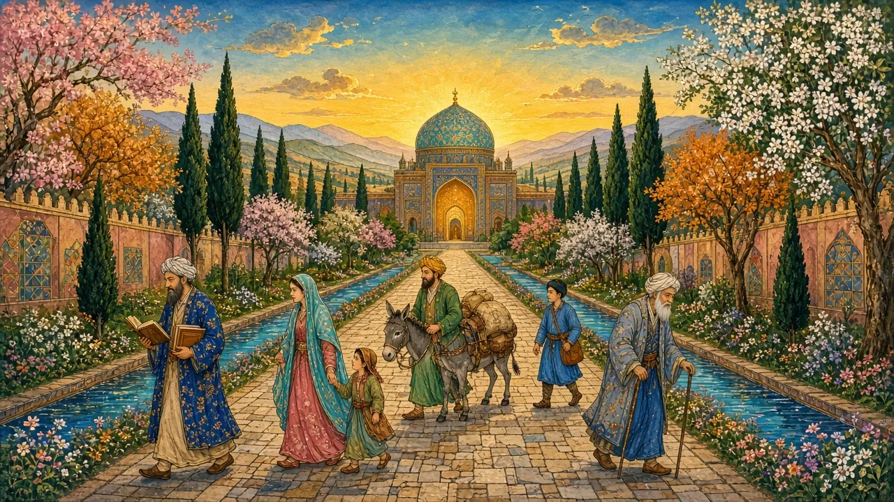
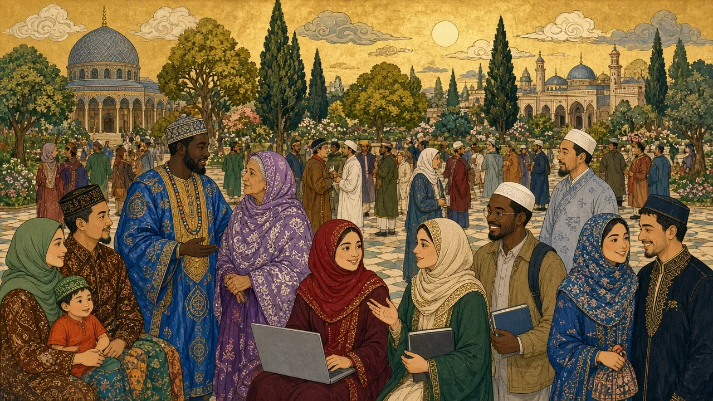
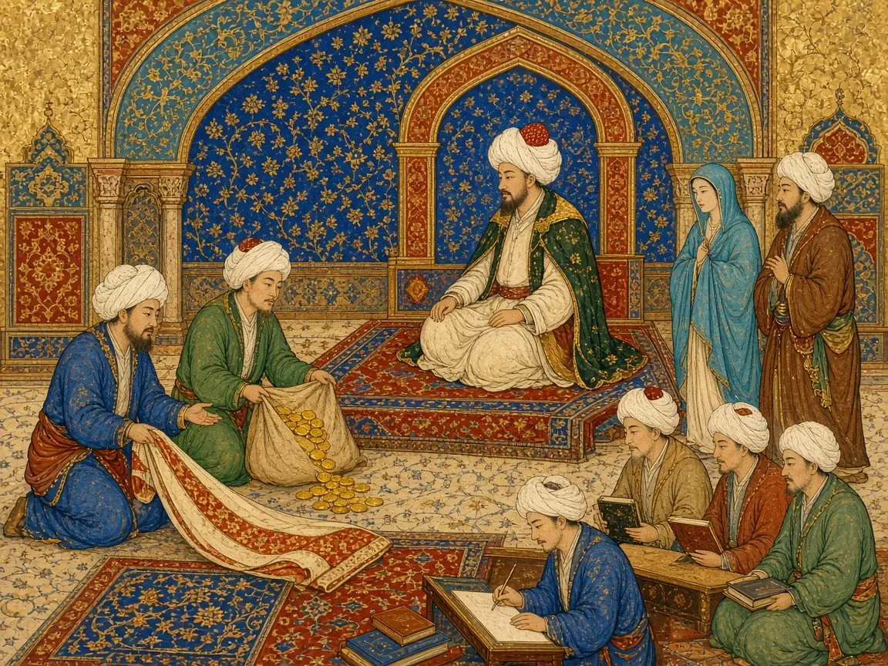
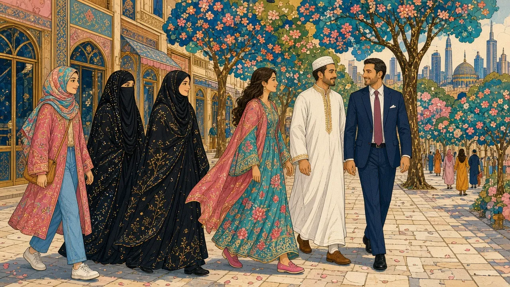
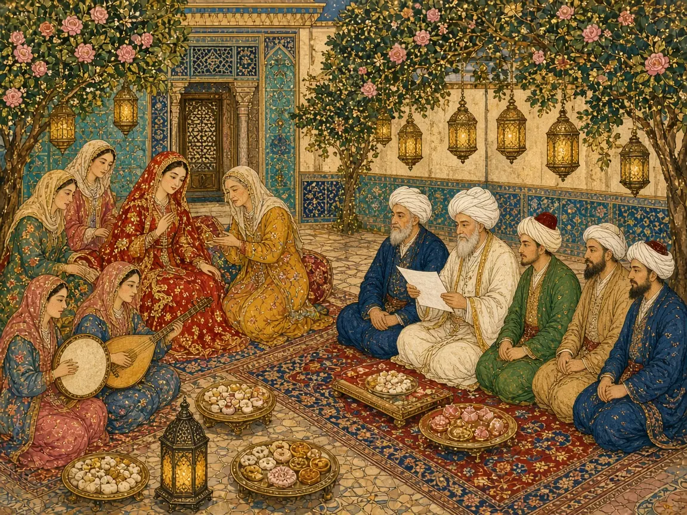
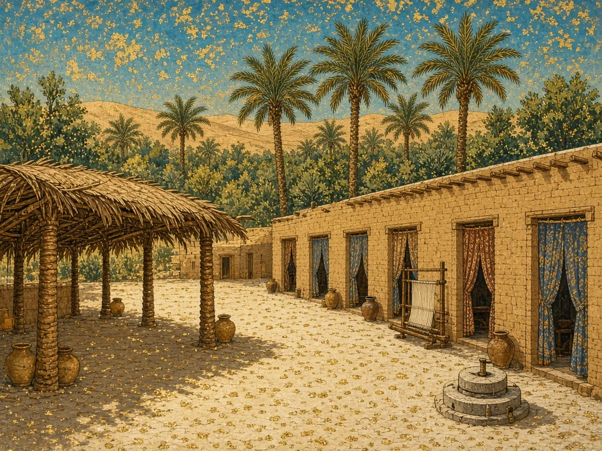
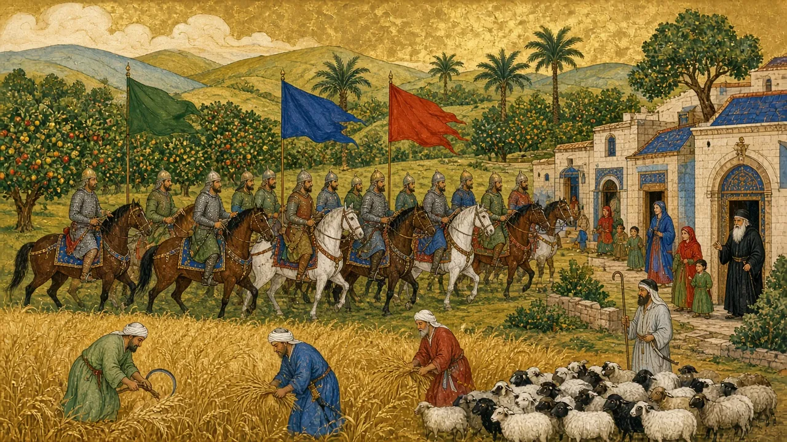
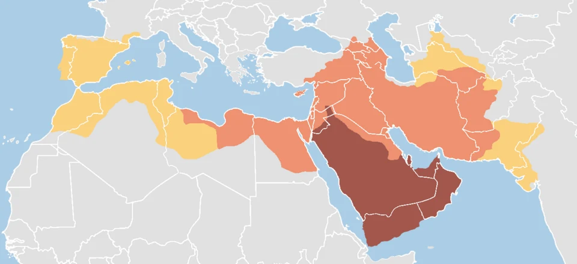
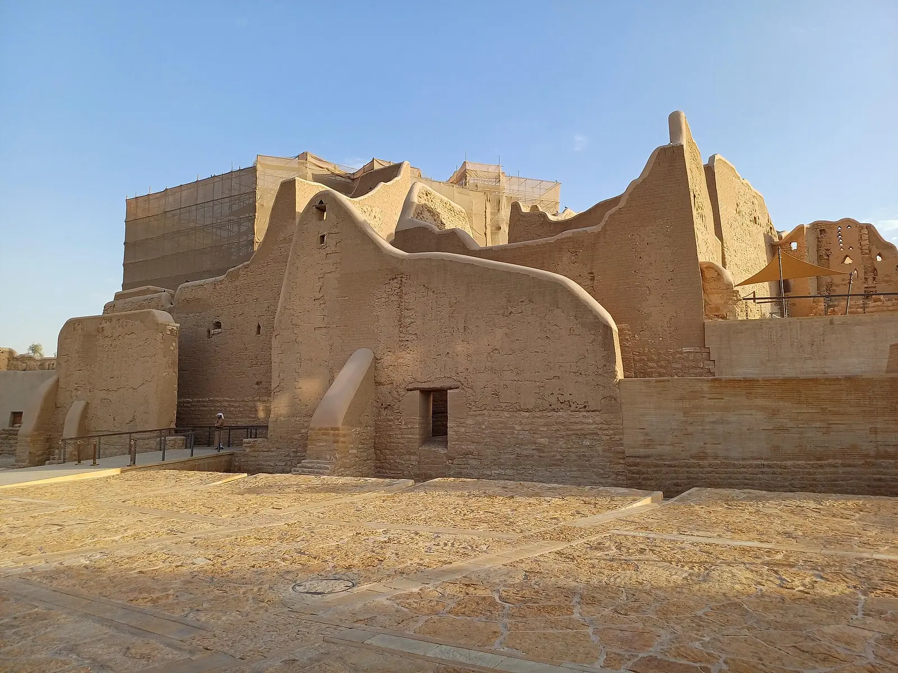

Background essay for Lecture 5 · PHIL 210 World Religions · Chapter 12: Islam · Steven Austin
Independent study. Lecture 5 is an independent study lecture: we will not meet in class for it. Work through it on your own before the Chapter 12 Quiz on December 4. This essay is the full written version of the lecture. It covers the core lesson, which answers Review Questions 7 and 8, and all of the required study, placed where each topic belongs, so that the whole lecture can be read as one continuous account. The quiz can draw on all of it.
Page numbers in parentheses refer to Robert E. Van Voorst, RELG: World, 4th edition, Chapter 12. Material from outside the textbook, including events since the textbook was published in 2018, is marked as such, and the notes at the end give its sources. Where the textbook reports what Muslims believe, or what one group or school holds, the essay says so.

Lectures 1 to 4 told the story of Muhammad, the empires, the Qur’an, and the Five Pillars. This lecture asks how Muslims live by their faith today. The title comes from al-Fatihah (Lecture 3): “Guide us on the straight path” (1:6). Islam teaches that God has revealed a way for all of life, and the chapter’s name for it is Shari‘a, “way, path” (p. 311).
You will meet the three categories of action, the hadith, Islamic law and its schools, diet, dress, marriage, and jihad. Then you will survey the many voices in Islam today: Sufis, Wahhabis, zealous movements, moderates and progressives, and what ordinary Muslims tell pollsters.1
1. Who Speaks for Islam?

Start with a warning from the sociologist Rodney Stark, quoted by the chapter: “The most persistent mistake Westerners make about Islam today is to think of it as monolithic” (p. 301). Monolithic means made of one solid block. In fact, the chapter says, Islam has a good deal of internal diversity and often strongly opposing factions.
The chapter sorts today’s groups into three bands (p. 301). The mainstream includes Sunnis and Shi‘as, whom you met in Lecture 2, and Sufis, the mystics. The zealous groups in Sunni Islam include the Wahhabis, the Muslim Brotherhood, the Taliban, and the Islamic State. Finally come the moderate movements. This lecture visits each band.
Keep a question in mind as you work: who speaks for Islam? It is also the title of the Gallup study you will meet near the end of the core lesson. A scholar trained in law, a Sufi poet, a Saudi official, a Malaysian women’s group, and a militant leader may all claim to speak for Islam. The painting imagines that crowded conversation. As you read, notice when the textbook reports what a group believes and when it reports what most Muslims believe; those are not the same thing.2
2. Required, Forbidden, Permitted
The chapter opens its section on ethics with a story (see the key terms below): a young Saudi woman who loved the Oprah show, which censors allowed except for segments on forbidden practices (p. 310). Ethics, in other words, shapes even what appears on television.
The principle: “A Muslim’s whole life is a matter of submitting to God’s revealed way of behavior.” Muslims believe every person is born with an equal inclination toward God and doing what is good (pp. 310–311). Note the contrast with the Christian idea of original sin from Chapter 11.
According to Muslim moral thought, all actions fall into one of three categories (p. 311). The first is good actions that are required, such as the Five Pillars of Lecture 4. The second is evil actions explicitly prohibited, such as idolatry, immorality, and theft. The third is neutral matters that are permitted and left up to the believer’s discretion. Islamic law later refined these into five grades, adding recommended and disliked actions (outside the textbook).
A common moral maxim adds a social duty: Muslims must “commend what is good and reprimand evil” (p. 312). Believers are responsible not only for their own conduct but for encouraging good in the community. You will see this maxim again with the Saudi religious police later in this essay.3
3. The Hadith: The Prophet’s Example

If the Qur’an is the main source for how to live, where do Muslims turn when it is silent? The chapter explains: the Qur’an is the main source of Muslim practices, and for any issues undefined in it, the Prophet’s informal sayings and life are the authoritative sources. These traditions are called the hadith (huh-DEETH), and they were vigorously collected and evaluated in the first generations after Muhammad’s death (p. 311).
Why do they matter so much? The Qur’an itself says relatively little about the actions of Muhammad, so the hadith became an important context for understanding the more difficult material in the Qur’an. Because they clarify the revelation, “their authority comes close to that of the Qur’an itself” (p. 311). Among them are the stories of the Night Journey and the Ascension that you studied in Lecture 1. The timeline dates their compilation to 632–900 (p. 325).
Outside the textbook: scholars graded each hadith by its chain of transmitters, and Sunnis regard six collections, especially those of al-Bukhari and Muslim, as the most reliable. Shi‘as use their own collections, emphasizing reports through Ali and the imams. The image is an Ottoman hilye, which describes the Prophet in words drawn from the hadith instead of a picture (Lecture 1).4
4. Shari‘a: God’s Way for All of Life

Here is the first anchor sentence for Review Question 7: “Shari‘a developed to guide the implementation of Qur’anic and hadith interpretation” (p. 311). Shari‘a (shah-REE-uh) means “way, path,” and the chapter defines it as the formal system of traditional Islamic law.
If you have heard of Shari‘a, the chapter says, it may have been in reports about the stoning of women convicted of adultery or cutting off the hands of thieves. Those reports, although based on actual events, give an incomplete and misleading impression of Muslim law (p. 311). Most of Shari‘a has nothing to do with criminal punishment.
Shari‘a deals with many aspects of daily life: politics, business, family life, sexuality, hygiene, and social issues. Many people today might call it a civil and criminal law shaped by a religion, but Muslims do not make that distinction. They believe Shari‘a is simply God’s law for the regulation of all Muslim life (p. 311).
The painting imagines a judge, called a qadi (outside the textbook), hearing a commercial dispute.
Review Question 7 (pp. 311–312): What role does Shari‘a play in the lives of Muslims? Anchor sentences, word for word: “Shari‘a developed to guide the implementation of Qur’anic and hadith interpretation.” and “It is fully implemented in only a few Muslim nations, is used more selectively in many other Muslim nations, and even seeks to make an entry in some western and Asian nations with large Muslim minorities who want to govern themselves at least partially by their own Islamic law.”5
5. Four Schools and a Fatwa

Shari‘a has schools. Four different schools of Shari‘a in Sunni Islam arose between 750 and 850 and still exist today. They do not differ in belief; they are distinct ways of defining morals and practices in precise, technical legal terms (pp. 311–312). The chapter does not name them; they are the Hanafi, Maliki, Shafi‘i, and Hanbali schools, each named for its founder (outside the textbook).
A part of Muslim law is the fatwa (FAHT-wah), a religious ruling by an imam trained in Shari‘a urging a particular course of action (p. 312).
Now the second anchor sentence for Review Question 7: Shari‘a, today the most widely used religious law system in the world, “is fully implemented in only a few Muslim nations, is used more selectively in many other Muslim nations, and even seeks to make an entry in some western and Asian nations with large Muslim minorities” (p. 312). The key terms below give the examples from Britain and France.
Review Question 7 (pp. 311–312): What role does Shari‘a play in the lives of Muslims? Anchor sentences, word for word: “Shari‘a developed to guide the implementation of Qur’anic and hadith interpretation.” and “It is fully implemented in only a few Muslim nations, is used more selectively in many other Muslim nations, and even seeks to make an entry in some western and Asian nations with large Muslim minorities who want to govern themselves at least partially by their own Islamic law.”6
6. Shari‘a in the West
The second anchor sentence for Review Question 7 says Shari‘a “even seeks to make an entry in some western and Asian nations with large Muslim minorities who want to govern themselves at least partially by their own Islamic law” (p. 312). The chapter gives two examples.
In Great Britain, informal Shari‘a courts already operate in Muslim communities, dealing with marital conflicts and divorce (p. 312). Outside the textbook: these councils have no power to override British law; many Muslim couples who marry only in a religious ceremony need a religious divorce, and the councils provide it. A 2018 government review recommended that religious marriages also be registered civilly, so that wives have full legal protection.
In France, where relations between the secular government and observant Muslims can be difficult, a nationwide political dispute broke out in 2008 when a court upheld a Shari‘a-based annulment of the marriage of two Muslims after the groom discovered on the wedding night that his bride was not a virgin (p. 312). Outside the textbook: the court had annulled the marriage on the ground that the bride had misrepresented an essential quality, and after the public outcry an appeals court reversed the decision later that year.
The chapter concludes that debate over the role of Shari‘a in both Muslim and non-Muslim countries continues today. Think about the questions involved. Should religious communities be allowed to settle family matters by their own law, as Orthodox Jewish courts (the beth din) also do in Britain and the United States? What protections must remain for individuals, especially women? The painting is the same one shown in the section on Shari‘a.7
Chapter 12 Review Question 7
What role does Shari‘a play in the lives of Muslims?
Pause and write your answer to Review Question 7 before moving on. The focus areas ask for three things: the purpose of this legal system, the kinds of daily activity it regulates, and how strictly it is implemented in different parts of the world today.
For purpose, use the first anchor sentence: Shari‘a developed to guide the implementation of Qur’anic and hadith interpretation. Explain that the Qur’an is the main source and the hadith fill in what it leaves undefined, and that Muslims see the result as God’s law for all of life, not a separate civil code.
For what it regulates, list politics, business, family life, sexuality, hygiene, and social issues, and mention that four Sunni schools from 750–850 define the rules in technical terms, while scholars issue fatwas on particular questions. Correct the misleading impression from headlines about punishments.
For how strictly, use the second anchor sentence: fully implemented in only a few Muslim nations, used selectively in many others, and sought by some Muslim minorities in Western and Asian nations. Give the British informal courts or the 2008 French annulment as an example. Both anchors are on pp. 311–312.8
7. Halal and Haram

Only halal (huh-LAHL), “permitted,” foods may be eaten by Muslims. You can see restaurants and fast-food outlets in the Muslim world that advertise this, such as the popular Halal Fried Chicken chain, HFC for short (p. 312). Foods that are haram (huh-RAHM), “forbidden,” may not be eaten. Pork, or products with even a small amount of pork mixed in, is particularly forbidden. The Qur’an also prohibits drinking wine (2:219), which is taken to mean that all alcoholic drinks and even food cooked with alcohol are haram.
Other behaviors are haram too. Muslims must not gamble or charge interest on loans. The chapter notes that banks in more moderate Muslim nations do not observe the ban on interest, while banks in stricter nations do (p. 312). Outside the textbook, Islamic banking uses profit-sharing and lease arrangements in place of interest.
Some questions are still open. Should smoking tobacco, widespread in the Arab world, now be forbidden? Some argue yes, because it harms the body God created; others argue that what the Qur’an, hadith, and Shari‘a do not expressly prohibit should be accepted. As some Muslims say with a smile, “Islam has so few permitted vices, so the ones it has should be kept” (p. 312). This debate is a good example of the three categories at work.9
8. Modest Dress for Women and Men

The chapter’s boxed feature on dress begins with a surprise: no specific types of clothing are prescribed for Muslims. The Qur’an and hadith lay down no requirements, probably because Arab ways of dress were a given in the first decades of Islam (p. 313). What all Muslims are required to do is dress modestly. The Qur’an requires a woman to dress in a way that conceals her physical beauty from men (24:31). Muslims typically take this to mean that her arms and legs should be fully clothed; her face may be visible, but her hair is covered at least with a hijab (hih-JAHB), the most common form of modest dress (p. 313).
Some cultures require more. In the 1980s Iran required full-body veiling, the chador; elsewhere it is called the burkah, which has mesh to hide the eyes, while the niqab has an opening for the eyes. Many Muslims argue correctly, the chapter says, that the Qur’an, hadith, and Shari‘a do not require a woman to be completely shrouded (p. 313).
Men must also dress modestly, usually covered from elbows to knees and often to the ankles. A turban or cap is common but more cultural than religious (p. 313). The key terms below give Leila Ahmed’s explanation of why more women wear the hijab today. The next section gives the rest of the box.10
9. Dress: The Whole Closer Look
This section finishes the boxed feature “A Closer Look: Muslim Dress for Women and Men” (p. 313), which you began in the previous section. Use the table to keep the terms straight; the quiz may ask you to match them. The chapter’s Figures 12.2 to 12.4 show a woman in a burkah, the hijab, and a Muslim man in a cap.
The basic rule is modesty, not a uniform. The Qur’an requires a woman to dress so as to conceal her physical beauty from men (24:31), and most Muslims interpret this to mean arms and legs fully clothed and the hair covered at least with a hijab. The chapter notes that the view most common in the West is women in headscarves with only their faces visible, while in some Middle Eastern cultures a covering over the whole face and body is required.
Two governments made full covering mandatory. In the 1980s the Shi‘a government of Iran required full-body veiling of women in public, a garment called the chador in Iran and the burkah in most places. In the 1990s the Taliban imposed the burkah on all women in Afghanistan, and some Afghan women still wear it. Many Muslims argue, correctly in the chapter’s view, that the Qur’an, hadith, and Shari‘a do not say a woman must be completely shrouded (p. 313). Outside the textbook: Iran still enforces head covering by law, and its enforcement sparked nationwide protests after the death of Mahsa Amini in police custody in September 2022.
The rules do not apply in the home among immediate family, where a woman is unveiled but still modest, or where only women are present. Egypt’s Mediterranean coast has women-only beaches where women can wear Western swimsuits and, in their words, “have fun and not sin.” Men must also dress modestly, so as not to draw attention to their shape (p. 313).11
| Form | What it is | Where the chapter places it |
|---|---|---|
| Hijab | Scarf around the head; face visible | Most common form in the Muslim world |
| Chador | Full-body veil | Required by Iran’s Shi‘a government in the 1980s |
| Burkah | Full-body covering with mesh over the eyes | Imposed by the Taliban on all Afghan women in the 1990s |
| Niqab | Similar garment with an opening for the eyes | Some Middle Eastern cultures |
| Men | Covered from elbows to knees, usually to the ankles; cap or turban cultural | “You’d rarely, if ever, see a Muslim man shirtless in public” |
10. Marriage and Divorce

The chapter says the status of women in Islam is determined by its view of marriage, not by its view of gender in itself (p. 312). Marriage is customary for all Muslims. Parents typically arrange it while children are young, although women often can refuse engagements they do not like. Some Muslim parents in North America travel back to their homelands to find matches (p. 312). The painting imagines the bride giving her consent while the contract is written.
The Qur’an says a man may have up to four wives at one time as long as he provides for them equally and with separate living quarters, “but the vast majority of Muslim men have only one wife” (p. 313).
Divorce is relatively simple for a man in most Muslim nations; women can divorce their husbands only with difficulty. Under Shari‘a a man says “I divorce you” before male witnesses at three different times, usually over three months. You may hear that saying it three times in one moment is enough, but the chapter says “that isn’t correct.” A hadith calls divorce “hateful in the sight of God” (p. 314). Yet early Islamic law gave women significant new rights in marriage and divorce, including alimony. The next section turns to Muhammad’s own marriages.12
11. Muhammad’s Marriages and A’isha

Here is the textbook’s account. The Qur’an says the limit on the number of wives did not apply to Muhammad (33:50–52). His multiple marriages, to nine wives after the death of Khadija, are thought to be part of his special calling as the Prophet. Some were entered into for political reasons, but an effort to obtain a son may have figured in as well (pp. 313–314). You met A’isha in Lecture 2 as the daughter of Abu Bakr, the first caliph (p. 296); a marriage to Umar’s daughter Hafsa likewise bound the Prophet to his closest allies (outside the textbook).
The chapter names two controversies. Muhammad’s marriage to A’isha, “Abu Bakr’s nine-year-old daughter,” was controversial because of her young age; his marriage to Zainab, the ex-wife of his adopted son Zaid, was controversial because of the closeness of the family relation. Because Muhammad’s life can be seen as normative, the Qur’an and later tradition are careful to say when his practices apply to other Muslims (p. 314). The Qur’an addresses the Zainab marriage directly (33:37), using it to end the rule that an adopted son counts as a blood son.
How do historians handle A’isha’s age? The figure comes from hadith collections such as al-Bukhari’s, which report A’isha saying she was betrothed at six and the marriage was consummated at nine; classical Sunni scholars accepted this. Some modern Muslim writers argue she was in her teens, citing reports about her older sister Asma’s age; most hadith specialists still regard the traditional report as the stronger one, while some historians caution that birth years in early sources are uncertain. Historians also note that marriage at or near puberty was common in many premodern societies, including medieval Europe. Today the marriage is debated: critics, including some Muslims, judge it by modern standards, and most Muslim-majority countries set a legal minimum marriage age. As with all history, separate what the sources say, how they have been read, and how they are judged now.13
12. Divorce, Custody, and Alimony
This section fills in the chapter’s paragraph on divorce (p. 314), which the section on marriage and divorce summarized.
Divorce is relatively simple for a man to obtain in most Muslim nations today; women can divorce their husbands only with difficulty. Shari‘a states that a man can divorce his wife by saying “I divorce you” in front of other male witnesses at three different times, usually over a period of three months. You may hear that saying it three times in one moment is enough, but the chapter says that is not correct (p. 314). Outside the textbook: the instant triple divorce was accepted by some classical jurists, and India’s Supreme Court struck it down for Indian Muslims in 2017. The three-month waiting period gives time for reconciliation and to establish whether the wife is pregnant.
Divorce is not to be undertaken lightly. A hadith says divorce is “hateful in the sight of God.” Yet the Qur’an fully and carefully provides for it (2:228–242 and 65:1–7; the textbook’s printed “115:1–7” is a typo, since the Qur’an has only 114 surahs). Nations that do not follow Shari‘a fully have other procedures that follow tradition more loosely. If there are children, they are usually in the main custody of the man after the divorce (p. 314).
Note the historical point: early Islamic law gave women significant new rights in marriage and divorce. A man must provide adequate alimony for his ex-wife as long as she lives, the chapter says, though there is usually no expectation that she be supported “in the manner to which she has become accustomed,” as Western divorce law often says (p. 314). Compare this with the status of women in seventh-century Arabia that you studied in Lecture 1.14
13. Circumcision and Female Genital Cutting
This topic is not in the textbook. It is included because students often ask whether female genital cutting is an Islamic practice, and the honest answer requires distinguishing culture, sources, and law.
Start with male circumcision, called khitan. It is practiced by nearly all Muslims, as it is by Jews. The Qur’an does not mention it, but hadith link it to Abraham and list it among the practices of fitra, natural human purity. The Shafi‘i and Hanbali schools generally hold it obligatory for males, while the Hanafi and Maliki schools call it a strongly recommended practice (sunna).
Female genital mutilation or cutting (FGM/C) is defined by the World Health Organization as procedures that remove or injure external female genitalia for non-medical reasons; WHO says it has no health benefits and causes lasting harm. UNICEF estimated in 2024 that more than 230 million living women and girls have undergone it. It is concentrated in about 30 countries, mostly in Africa, with some in the Middle East and Asia. It predates Islam and is practiced by some Christian and other communities, while it is rare or absent in many Muslim-majority nations, including Turkey, Iran, and most of South Asia.
In Islamic law the picture is mixed. The Qur’an is silent. A few hadith are cited in support, notably one reported by Abu Dawud, who himself called it weak. The Shafi‘i school, one of the four Sunni legal schools you met in the section “Four Schools and a Fatwa” (not a sect), historically held a minimal form obligatory, while others treated it as merely recommended or honorable. Modern scholarship has moved strongly against it: in 2007 Egypt’s grand mufti, Ali Gomaa, and al-Azhar’s Supreme Council for Islamic Research declared it without basis in Islamic law, and Egypt banned it in 2008. In 2024 Gambia’s parliament rejected a bill to repeal its 2015 ban.15
14. Jihad: “Struggle”

Jihad (jee-HAHD) means “struggle” for God and Islam (p. 314). Many people think Islam expanded mainly by military means, and recent terrorism has reinforced that stereotype. Many others say Islam is a religion of peace and that jihad means peaceful striving. As the scholar Stephen Prothero remarks, “This crucial conversation rarely advances beyond a ping-pong match of clichés.” So, the chapter says, let us go deeper (p. 314).
The great majority of Muslims today want to be seen as tolerant. “There must be no compulsion in religion,” says an often-quoted verse (2:256). Muslims point out, correctly, that many Qur’anic passages about jihad refer to spiritual striving within individuals. A hadith calls this the “greater jihad,” and military conflict the “lesser jihad.”
Here is the first anchor sentence for Review Question 8: “The basic meaning of jihad for most Muslims is the struggle against one’s own evil to fully submit to Allah” (p. 314). It also refers to groups of Muslims who struggle to improve the state of Islam. The painting imagines the greater jihad: a believer at prayer while a storm passes outside. The next section turns to the military meaning.
Review Question 8 (pp. 314–315): What are the main features of the Islamic concept of jihad? Anchor sentences, word for word: “The basic meaning of jihad for most Muslims is the struggle against one’s own evil to fully submit to Allah.” and “An Islamic country should not initiate conflict for religious reasons only.”16
15. “Even Though It May Be Hateful to You”

“Fighting is commanded for you, even though it may be hateful to you.”
Qur’an 2:216; the chapter quotes the final phrase, p. 314
Nevertheless, the chapter continues, jihad as military action is important in the Qur’an. Muslim scripture repeatedly commands Muslims to take up arms and fight when necessary on behalf of the Islamic community (for example 2:190; 8:38; 9:29; 22:39–41), and it treats jihad as military struggle more often than nonmilitary (p. 314). Muhammad himself strongly criticized those who implied that spiritual struggle could substitute for military struggle. Military action is commanded “even though it may be hateful to you” (2:216).
This struggle is usually directed against opposing military forces, but the chapter says it has included more deadly action against people of other religions in Islamic lands when they resisted Muslim rule (p. 314). Muslim warriors in conflicts with a religious dimension are often called mujahedeen (moo-JAH-huh-deen), “those who engage in jihad.” In the West they are often called “jihadists,” but this is usually pejorative.
Hold both truths together: for most Muslims the basic meaning is inner struggle, and the Qur’an also commands fighting. The question then becomes: under what rules? The painting looks ahead to the next section, which lists the rules of war, including the protection of noncombatants. The first half of 2:216 as quoted above is a common English rendering; the chapter quotes only the final phrase, and translations vary.17
16. The Rules of War
Abu Bakr drew up the basic rules from the Qur’an and Muhammad’s practice; others expanded them, and they are not always consistent (pp. 314–315).
First, jihad should not be used to advance the cause of Islam. Here is the second anchor sentence for Review Question 8: “An Islamic country should not initiate conflict for religious reasons only” (p. 314). Second, suicide in warfare is often seen as evil; the Qur’an prohibits suicide (4:29) but does not explicitly apply this to warfare, so some disagree. Third, a nation attacked may defend itself, but Muslims must publicly and formally declare war in a fatwa before any military action (p. 315); the answer key calls this a key supporting detail. Fourth, all noncombatants are to be spared and treated well.
Fifth, if any country uses force to repress the free exercise of Islam, Islamic nations may, even must, liberate the oppressed Muslims. Sixth, jihad can be waged against Muslim nations thought to have departed from the faith. Seventh, once a country is Islamic, it may not return to non-Muslim rule. The next section explains the examples the chapter gives for the last two rules.
Review Question 8 (pp. 314–315): What are the main features of the Islamic concept of jihad? Anchor sentences, word for word: “The basic meaning of jihad for most Muslims is the struggle against one’s own evil to fully submit to Allah.” and “An Islamic country should not initiate conflict for religious reasons only.”18
17. The Rules of Jihad, with the Chapter’s Examples
This section repeats the seven rules from the previous section with the explanations and examples the chapter gives (pp. 314–315). Remember the chapter’s caution: the rules vary somewhat in history and today and are not always consistent with each other.
The first rule carries the anchor sentence for Review Question 8. The second explains why suicide in warfare is often seen as evil: it usurps the power of God alone to determine life and death, even in battle. The Qur’an makes a blanket prohibition of suicide (4:29) but does not explicitly apply it to warfare, so some Muslims disagree. This disagreement matters today, because militant groups call suicide bombers martyrs, while most Muslim scholars condemn such attacks, especially on civilians.
The third rule is the answer key’s supporting detail: a nation attacked may defend itself, but Muslims must publicly and formally declare war in a fatwa, a ruling by a recognized Muslim leader, before any military action. The fourth protects all noncombatants: women and children, the sick and the elderly, and enemy soldiers who surrender are to be spared and treated well.
The last three rules are the most open to misuse. If a country represses the free exercise of Islam, Islamic nations may, even must, liberate the oppressed Muslims. Jihad can be waged against Muslim nations thought to have left the faith; Ayatollah Khomeini declared Iran’s 1980s war against Sunni-ruled Iraq a jihad. And once a country is Islamic, it may not return to non-Muslim rule. The textbook says this is why most Muslims today do not recognize Israel as legitimate (p. 315); that is the textbook’s claim, and attitudes vary by country, as shown by the agreements several Arab states have signed with Israel since 1979 (outside the textbook).19
| Rule | The chapter’s explanation or example |
|---|---|
| Not for religion only | “An Islamic country should not initiate conflict for religious reasons only.” |
| Suicide often evil | It usurps God’s power over life and death; 4:29 forbids suicide but does not mention war, so some disagree |
| Defense by fatwa | War must be publicly and formally declared by a recognized Muslim leader first |
| Spare noncombatants | Women, children, the sick, the elderly, and soldiers who surrender |
| Liberate the oppressed | Repressing the free exercise of Islam is hostility to Islam |
| Against apostate states | Khomeini called Iran’s 1980s war on Sunni-ruled Iraq a jihad and its dead martyrs |
| No return to non-Muslim rule | The textbook says this is why most Muslims do not recognize Israel as legitimate |
18. Thirty Years to the Atlantic

How did Islam spread so fast? The chapter says there was usually little resistance in the first centuries, because of the strength of Muslim forces and the conditions in the lands they conquered. It claims whole regions welcomed the advancing Muslims to replace hated Byzantine rulers, and that most Christians and Jews welcomed the Muslim armies, expecting and receiving basically respectful treatment (p. 315). Historians today would put this more cautiously: some communities, such as Christians persecuted by Byzantium as heretics, did prefer the new rulers, while others resisted.
Christian and Jewish populations continued for centuries. In Egypt, Coptic Christians were a majority for more than a thousand years, but over time, with steady pressure and sometimes persecution, they were reduced to about 10 percent today. Peoples not “of the Book” were converted by force if necessary (p. 315; compare Lecture 3). Nearly the entire Middle East came under Islamic rule in about thirty years, and within a hundred years the empire stretched from the Atlantic coast of North Africa to modern Afghanistan, one of the fastest imperial expansions in history.
The chapter closes with a balanced judgment: despite all the attention paid to it, “jihad is not one of Islam’s central practices. It isn’t a pillar, nor is it one of the key doctrinal teachings. But to understand Islam in the world today, one must understand jihad well” (p. 315).20
Chapter 12 Review Question 8
What are the main features of the Islamic concept of jihad?
Pause and write your answer to Review Question 8. The focus areas ask for the basic meaning of jihad for most Muslims, the difference between the greater and lesser jihad, and the rules governing warfare.
Begin with the definition, “struggle” for God and Islam, and the first anchor sentence: the basic meaning for most Muslims is the struggle against one’s own evil to fully submit to Allah. Explain the hadith that calls this the greater jihad, with military conflict as the lesser jihad, and cite 2:256 on no compulsion in religion.
Then be honest about the military side: the Qur’an repeatedly commands fighting when necessary, “even though it may be hateful to you” (2:216).
Finish with the rules, using the second anchor sentence: an Islamic country should not initiate conflict for religious reasons only. Add the supporting detail from the answer key, that a nation may defend itself but war must be formally declared in a fatwa first, and the protection of noncombatants. Mention that suicide in warfare is often seen as evil, though interpretations differ. If you have room, close with the chapter’s point that jihad is not a pillar.21
19. The Sufis: The Way of Love
Islam typically emphasizes practice, but it also developed a mystical tradition. Islamic mystics are Sufis (SOO-feez), a word for the woolen garments worn by the first Muslim mystics. Sufism arose in the 700s and is found among both Sunnis and Shi‘as. It spread Islam on the edges of the Muslim world and deepened commitment among the lower classes, especially in folk Islam in Africa and Central Asia, and it is very popular in Pakistan (p. 302).
Sufis pursue a direct, loving, and ecstatic experience of God, usually to narrow the gap between God and humans, and poetry, music, and dancing are important in this quest. They organized into orders or brotherhoods, among them the Mevlevi order, from which the whirling dervishes come (p. 302). Watch the video: the turning is a form of prayer. At first, authorities viewed Sufism with suspicion, and many Muslims considered the idea of becoming one with God idolatrous (p. 303).
The most influential Sufi was Jalal al-Din Rumi, the thirteenth-century Persian poet, whom the chapter calls the most popular poet in America today. His poem “One Song” appears in the key terms below. Western readers sometimes treat Sufism as universal mysticism, but the chapter says Sufism has been, and probably will remain, an inner-Islamic movement (p. 303).22
20. “Back to the Book”

“Back to the Book [the Qur’an] and the Tradition [sunna] of the Prophet!”
The reform cry of Muhammad al-Wahhab, late 1700s (p. 303)
From its beginnings, the chapter says, Islam has seen movements that strive for strict purity and zeal. One is the Wahhabi reform movement in Sunni Islam, begun by Muhammad al-Wahhab in the late 1700s (p. 303). He was shocked by what he saw as widespread corruption in Islam. He despised Sufism, which he thought mixed Islam with Hindu pantheism, and he called the veneration of the tombs of Shi‘a and Sufi saints idolatrous. His message was summed up in the cry quoted above, with a conservative method of interpretation that avoided all innovations.
A Wahhabi state was established in the 1920s, when the Sa‘ud family became rulers of the new nation of Saudi Arabia. Because Saudi Arabia holds Mecca and Medina and has vast oil wealth, the way it practices Islam has become widely known and influential, though most Sunnis do not live under Wahhabi requirements (pp. 303–304). The photograph above shows at-Turaif in Diriyah, the first Saudi capital, where al-Wahhab’s alliance with the Saudi family began in 1744 (outside the textbook).
A related movement is Salafi (suh-LAH-fee): Muslims who model their faith on their understanding of the salaf, the earliest Muslims. Salafism is rapidly gaining popularity and is connected with literalist, strict practice; in Egypt it is even more conservative than the Muslim Brotherhood (p. 304).23
21. The Wahhabi State and Its Religious Police
The section “Back to the Book” introduced the Wahhabis. This section looks at the state they shaped. When the Sa‘ud family founded Saudi Arabia in the 1920s, practices Wahhabis considered contrary to Islam were severely punished: consuming any alcohol, venerating saints at their tombs, playing secular music, possessing anything deemed pornographic, and the formal presence of any other religion. Muslim religious law became the law of Saudi Arabia and was strictly enforced (p. 303).
The so-called religious police, formally the “Commission for the Promotion of Virtue and the Prevention of Vices,” patrol public areas to enforce this law, particularly on women’s dress and conduct, though this has been easing a bit since 2001 (p. 303). Notice the name: it is the moral maxim from the section on the three categories of action, “commend what is good and reprimand evil,” turned into a government agency.
The chapter adds two cautions. The Western press often calls Wahhabism “puritanical,” but that is a term from Protestant Christian history that ill fits this Islamic movement. And most Sunnis in the world do not live under Wahhabi requirements, though Saudi Arabia, with Mecca, Medina, and oil wealth, is the most influential nation in the Muslim world (pp. 303–304). Also note that the chapter’s timeline dates the Wahhabi movement to 1703, which is al-Wahhab’s birth year; the text’s “late 1700s” and the 1744 alliance are closer.
Outside the textbook: change accelerated after 2016. The government removed the religious police’s power to arrest, allowed women to drive in 2018, and opened cinemas and concerts, while also jailing critics, including some clerics and women’s rights activists.24
22. What Do We Call It?
The chapter’s boxed feature “Islamic Fundamentalism?” asks a simple question with no simple answer: what should we call strict or militant Muslim movements (p. 304)? Words shape how we think, so it is worth knowing the options and their problems.
Islamic fundamentalism became popular after the Iranian Revolution of 1979 to describe the resurgent Shi‘a movement. Western journalists used it first, often unaware that they were applying to Muslims a term coined for certain American Protestant Christians. It has since been applied to the Taliban, al-Qaeda, the Wahhabis, the Brotherhood, and IS. Islamism appears in the press and in scholarship and has one-word simplicity, but it is oddly constructed, and the suffix can be pejorative. Some groups called Islamist say they simply follow Islam, not an “ism.” Remember that Islamist is a key term from Lecture 1.
Salafi refers to Muslims who model their faith on the salaf, the earliest Muslims. Political Islam describes the effort to reunite the political and the religious, but the chapter notes that Islam traditionally does this and has done so for most of its history. With militant Islam we must distinguish those who use violence from those who do not, and among the violent, those who follow the traditional rules of jihad from those who do not.
The chapter judges radical Islam “perhaps the best of these options,” though vaguer and possibly pejorative; positively, it suggests going to the root and going all the way with what radicals believe God wants (p. 304). Notice that the chapter itself mostly uses “zealous.”25
23. Zealous Movements
The chapter’s zealous groups are all Sunni, and each is distinct; do not lump them together. The key terms below introduce each group, and the sections that follow give each one fuller treatment.
The Muslim Brotherhood was launched in Egypt by the charismatic Hassan al-Banna in 1929, after the collapse of the Ottoman caliphate left the Muslim world without a caliph for the first time (p. 304). It works for Islamic law through politics and social service, sometimes violently. The Taliban, “students” of the Qur’an, ruled Afghanistan in the 1990s and treat Muslims who do not share their strict standards as false Muslims (p. 305).
The Islamic State regards itself as a nation and a worldwide caliphate; even al-Qaeda rejected it as too violent, and the chapter says it is grounded even more than other radical movements in religious belief, fighting to bring about the end of the world (p. 305). Al-Qaeda, “the base” of jihad, brought something new to Islam: continual attacks on non-Muslims (p. 322).
Updates after the textbook’s 2018 publication are marked in each entry.26
24. The Muslim Brotherhood, 1929–2013
When the Ottoman Empire collapsed around 1920, the Muslim world was left for the first time without a caliph. That vacuum, together with European colonial control of many Middle Eastern nations under the League of Nations, led to a rise of conservative movements (p. 304). One of the earliest and most influential was the Muslim Brotherhood, launched in Egypt by the charismatic Hassan al-Banna in 1929. (The chapter’s timeline says 1928, which most historians give as the founding year.)
The Brotherhood opposed corruption, the lax practice of Islam, and westernization in Egyptian government and life, and worked for purely Islamic legal systems in Egypt. It spread to several other Sunni countries. Sometimes its actions are violent, and many Arab governments see it as undermining their rule. It is often called the beginning of organized Islamic fundamentalism, but the chapter says that distinction probably belongs to Wahhabism. Its members have taken very conservative stances; in Kuwait they opposed laws giving women the vote (p. 304).
In early 2011 the Brotherhood played a key role in toppling Egyptian President Hosni Mubarak. Egypt then moved toward conservative Muslim rule under President Mohamed Morsi, a Brotherhood leader, until the military ousted him in 2013; since then the government crackdown on the Brotherhood has been constant (pp. 304–305). Recall from Lecture 2 that the Arab Spring’s hopes for democracy were largely disappointed.
Outside the textbook: Egypt designated the Brotherhood a terrorist organization in December 2013 and imprisoned thousands of members. Morsi collapsed and died during a court session in June 2019. Its branches and offshoots remain active in politics elsewhere, and Hamas began as a Palestinian branch in 1987.27
| Date | Event |
|---|---|
| ca. 1920 | The Ottoman Empire collapses; for the first time the Muslim world has no caliph |
| 1929 | Hassan al-Banna founds the Brotherhood in Egypt (the timeline says 1928) |
| Later | Spreads to other Sunni countries; sometimes violent; opposes women’s vote in Kuwait |
| 2011 | Helps topple President Hosni Mubarak in the Arab Spring |
| 2012–2013 | Mohamed Morsi, a Brotherhood leader, governs until the military ousts him |
25. The Taliban
The Taliban, “students” of the Qur’an, draw members from many Sunni countries (p. 305). The movement was influenced by the Wahhabis during the successful Muslim struggle to drive the Soviet Union out of Afghanistan in the 1980s. In the 1990s the Taliban gained control of Afghanistan, and its first web site invited Muslims to contribute money to what it called “the first truly Islamic state in history.”
The Taliban drew Western opposition for repressive measures against Afghan women, such as ending all education for females of any age except homeschooling and prohibiting women from working outside their homes (p. 305). Recall from the section on dress that they also imposed the burkah on all women. Like some zealous Muslims before them, the chapter says, the Taliban consider Muslims who do not adhere to their strict standards to be false Muslims and enemies of Islam. Their means have often been brutally violent, and their strong belief has made them tenacious fighters.
The Taliban also sheltered al-Qaeda, and after 9/11 a U.S.-led coalition invaded Afghanistan to depose them (p. 322). When the textbook was written, it noted that the Taliban “continue their military struggle to regain rule in Afghanistan” (p. 305).
Outside the textbook: that struggle succeeded. Under a 2020 agreement with the United States, foreign forces withdrew, and the Taliban took Kabul on August 15, 2021, as the U.S.-backed government collapsed. The new government again restricted women: girls have been kept out of secondary school, women were barred from universities in December 2022, and many jobs and public places are closed to them. No country had formally recognized the government for years after the takeover.28
26. The Islamic State
The Islamic State (IS) has gone by several names: the Islamic State of Iraq and the Levant (ISIL), the Islamic State of Iraq and Syria (ISIS), and DAESH, the Arabic equivalent of ISIL, which IS strongly dislikes. It came into existence in 1999, the chapter says, and was founded by former religious and military leaders of Saddam Hussein’s government in Iraq (p. 305). Like the Taliban, it tries to conquer and hold territory, and it regards itself as a nation, though no other nation does; even al-Qaeda rejected it as too violent.
At the end of 2017 IS controlled about 10 million people in large parts of Iraq and Syria, with more limited power in Libya and Nigeria, where Boko Haram (“western schooling is evil”) joined it in 2015. It declared itself a worldwide caliphate with Abu Bakr al-Baghdadi as caliph, claiming authority over all Muslims. The chapter says it is grounded even more than other radical movements in religious belief, fighting to bring about the end of the world and the triumph of Islam (p. 305). Recall the Mahdi from Lecture 3.
IS has been ferocious in applying its interpretation of Muslim law: barring women from public life, enforcing dress codes, killing religious minorities who refused to convert, especially Christians and Yazidis, posting videos of beheadings, and forcing thousands of women and girls into sexual slavery. It recruited through social media and inspired “lone wolf” attacks. It struck Paris in November 2015, killing 129, bombed a Russian airliner over Egypt, killing 224, and an agent attacked a concert in Manchester in 2017, killing twenty-two (pp. 305–306).
Outside the textbook: U.S.-backed Iraqi and Kurdish-led forces took back IS territory, ending with Baghuz in March 2019, and al-Baghdadi killed himself during a U.S. raid in October 2019. Affiliates continue attacks, especially in the Sahel and elsewhere in Africa.29
27. Al-Qaeda and September 11
On September 11, 2001, al-Qaeda (“the base” of jihad), an organization of radical Muslims based in Afghanistan, attacked the United States. Nineteen members hijacked four airliners: two struck the World Trade Center towers, which collapsed; one struck the Pentagon; the fourth crashed in Pennsylvania when passengers and crew tried to retake it. Excluding the hijackers, 2,974 people died, citizens of more than ninety nations (p. 322).
Osama bin Laden (1957–2011), a Saudi banished for extremism, founded al-Qaeda to oppose with violence those he saw as threats to true Islam, especially Western influence in Muslim nations and the existence of Israel. He spoke in the cadences of the Qur’an and liked to be photographed in caves, as Muhammad once hid from his enemies. The chapter says al-Qaeda brought something new to Islam: continual attacks on non-Muslims. Yet its victims have been Muslims as much as westerners; it has little support among Shi‘as, and most Sunnis do not approve of it (p. 322).
The United States led a coalition into Afghanistan to depose the Taliban and destroy al-Qaeda’s base; bin Laden was killed in a U.S. raid in Pakistan in 2011. The 2001 Patriot Act expanded government surveillance powers (p. 322). Muslim organizations in the United States swiftly condemned the attacks, gave money, held blood drives, and helped victims, and some worked with law enforcement (p. 323).
The chapter also records the backlash: a rise in anti-Muslim prejudice; “lone wolf” attacks such as the Boston Marathon bombing (2013) and the Orlando nightclub shooting (2016); the New York police department’s spying on mosques from 2003 to 2014, with the last major lawsuit settled in April 2018; and investigations of Muslim charities that you met in Lecture 4 (p. 324).30
28. Moderates, Progressives, and Women
“Men have authority over women because God has made the one superior to the other, and because men spend their wealth to maintain women.”
Qur’an 4:34 (quoted p. 306)
“Women shall with justice have rights similar to those exercised against them, although men have a status above women.”
Qur’an 2:228 (quoted p. 306)
It might seem from all this that Islam has only grown more conservative. The chapter says that would be a mistake (p. 306). Muslim modernism tried to recover the original meaning of the Qur’an with historical methods: the Indian scholar M. Azad (1888–1958) argued that one must study Arabian culture in Muhammad’s time to understand the text, though this movement stayed mostly among westernized upper classes.
Since 2001, a small but vocal group has tried to move Islam to the center; some call themselves Progressives. Omid Safi of the University of North Carolina, author of Progressive Muslims, opposes Wahhabism, the Taliban, and other radical groups. Sisters in Islam, a Malaysian group founded in the 1980s by Zainab Anwar, promotes an Islamic vision of freedom, justice, and equality for women. Progressives claim that Muhammad’s reforms were frozen by a conservative wave after his death and see themselves as carrying on his liberating spirit (p. 306).
The status of women is a persistently difficult issue. Traditionally Islam sees gender differences as given by God, as in the two verses quoted above (4:34 and 2:228). Moderates and progressives work for women’s freedom to wear a head covering or not, to have an equal education, to vote, and to participate in politics. Progress is slow, the chapter says, but they are not discouraged (p. 306). Notice that both sides appeal to the Qur’an.31
29. Muslims in Europe
Islam is the second-largest religion in Europe after Christianity, with around 14 million Muslim residents, the chapter says (p. 320). (Its opening section gives 15 million; Pew’s estimate for all of Europe including Russia is far higher, about 46 million in 2025, as you saw in Lecture 1.) European Muslims have mostly been immigrants since World War II, but a native Muslim population has lived in the Balkans for centuries, from the long Ottoman rule (Lecture 2).
Read the table. France has the largest number in western Europe, 6 to 7 million, 8 to 10 percent of its population, mostly from former colonies in North Africa. Germany follows; most of its 4.5 million Muslims are Turkish guest workers in unskilled labor. Britain has 2.7 million from its former empire, and Italy 1.5 million from Africa. Apart from Turkey, the only Muslim-majority European nation is Albania; Bosnia and Macedonia have large minorities (p. 320).
Violent attacks by radical Muslims linked to al-Qaeda or IS have greatly increased scrutiny of European Muslims. Just as important are matters of identity and respect, especially the hijab. France’s ban on Muslim headscarves in schools and public buildings and its 2016 ban on the modest “burkini” are especially controversial (France’s highest administrative court suspended the burkini bans that same year, outside the textbook). In general, European Muslims are less integrated into national life than North American Muslims. The 2015–2016 migrations from North Africa and the Middle East, especially Syria, brought more than a million Muslims to Germany, a sharp test of tolerance (p. 321).
The photograph above shows the Merkez Mosque in Duisburg, which the chapter calls Germany’s largest mosque (p. 317); it was built by a Turkish-German community.32
| Country | Muslims (textbook) | Mostly from |
|---|---|---|
| France | 6–7 million (8–10%) | Former North African colonies |
| Germany | 4.5 million | Turkish guest workers |
| Britain | 2.7 million | The former empire |
| Italy | 1.5 million | Africa |
| Balkans | Albania Muslim-majority; Bosnia and Macedonia large minorities, from Ottoman rule | |
30. Muslims in North America

Muslims came to North America mostly after 1950, from the Middle East and, in Canada’s case, South Asia. Earlier, some enslaved Africans were Muslims, estimates range from 5 to nearly 50 percent, but they could not keep their faith under slavery; the Black Muslim movement is treated in Chapter 13 (p. 320). The Sunni to Shi‘a ratio, about 85 to 15, matches the wider Muslim world. Dearborn, Michigan, has the largest Muslim population outside metropolitan New York; you met it in Lecture 4. Most North American Muslims have no formal mosque membership but still practice (p. 321).
The U.S. Census does not ask about religion, so surveys fill the gap. A 2007 Pew survey found about two-thirds of Muslim Americans foreign born; of the U.S.-born third, the majority are converts and African Americans. Pew projected the 2.7 million U.S. Muslims would grow to about 8 million by 2050. A Zogby survey found 60 percent hold at least one academic degree and about 40 percent earn over $75,000 (p. 321). Figure 12.5 shows the ethnic mix in 2015.
North American Muslims are more assimilated than European Muslims, and the United States and Canada have largely extended to them the same religious rights as others; the main adaptation has been finding time for afternoon prayers at work. Many scholars hope North American Muslims can show how to live faithfully in a non-Muslim society (p. 321). After 9/11 came prejudice and surveillance, but also cooperation and hope (pp. 323–324).
The chapter ends by noting the growth of Islamic studies in North American colleges, “of which you are now a part.” That is where this unit ends too. Return to the unit guide to review all five lectures before the quiz.33
31. What a Billion Muslims Think
“Until and unless decision makers listen directly to the people and gain an accurate understanding of this conflict, extremists on all sides will continue to gain ground.”
John Esposito and Dalia Mogahed (p. 323)
Who speaks for Islam? One answer is: ask Muslims. The largest study of public opinion in the Muslim world was completed by Gallup in 2007 and published as Who Speaks for Islam? What a Billion Muslims Really Think. It rests on six years of research and more than fifty thousand interviews in more than thirty-five nations, representing about 90 percent of the world’s Muslims, with comparison data from Americans (p. 323).
The results, the chapter says, may surprise you. Muslims and Americans are equally likely to reject attacks on civilians as morally wrong in all circumstances. Large majorities of Muslims would guarantee free speech in a new constitution. Large majorities say religious leaders should have no direct role in drafting laws or governing. What Muslims least admire about the West is its perceived moral decay, which is exactly what Americans say too. Muslims want prosperity and security, and they ask westerners to drop negative stereotypes and respect Islam (p. 323).
The authors, John Esposito and Dalia Mogahed, caution that most Muslims do not live in democracies where their opinions count, and conclude with the sentence quoted above (p. 323). Compare this with the zealous groups in the previous sections: they are loud, but the survey suggests they do not speak for most Muslims.34
32. Check Yourself
Try each question before opening the answer. These six questions cover both review questions for this lecture and the survey of Muslim groups.
If you missed the first three, go back to the sections from “Required, Forbidden, Permitted” through Review Question 7. Make sure you can explain the difference between the Qur’an, the hadith, Shari‘a, and a fatwa: scripture, the Prophet’s example, the legal system built from both, and a particular ruling by a qualified scholar. Remember that the four Sunni schools differ in legal method, not in belief.
If you missed the jihad questions, return to the sections from “Jihad: ‘Struggle’” through Review Question 8. The quiz is likely to ask about the greater and lesser jihad and about the rules of war, especially the fatwa requirement and the protection of noncombatants. Be ready to quote the anchor sentence that an Islamic country should not initiate conflict for religious reasons only.
For the groups, be able to place each one: Sufis are mystics in the mainstream; Wahhabis and Salafis are strict Sunni reformers; the Brotherhood, Taliban, IS, and al-Qaeda are the zealous movements; Azad, Safi, and Sisters in Islam are moderates and progressives.35
What are the three categories of action?
Required (such as the Five Pillars), prohibited (idolatry, immorality, theft), and permitted (p. 311).
What is a fatwa?
A ruling by an imam trained in Shari‘a urging a particular course of action (p. 312).
Is Shari‘a fully implemented everywhere in the Muslim world?
No: fully in only a few nations, selectively in many, and sought by some minorities in the West (p. 312).
What is the “greater jihad”?
The inner struggle against one’s own evil to fully submit to God (p. 314).
What must happen before defensive war?
It must be publicly and formally declared in a fatwa (p. 315).
Who was Rumi?
The thirteenth-century Persian Sufi poet of mystical love (p. 303).
Notes
1. Van Voorst, RELG: World, 4th ed., ch. 12, pp. 301–315, 320–324. [back]
2. Van Voorst, RELG: World, 4th ed., ch. 12, p. 301. [back]
3. Van Voorst, RELG: World, 4th ed., ch. 12, pp. 310–312. The five grades of Islamic law are outside the textbook. [back]
4. Van Voorst, RELG: World, 4th ed., ch. 12, pp. 311, 325. Hadith grading and collections: outside the textbook. [back]
5. Van Voorst, RELG: World, 4th ed., ch. 12, p. 311. The term qadi is outside the textbook. [back]
6. Van Voorst, RELG: World, 4th ed., ch. 12, pp. 311–312, 325. School names are outside the textbook. [back]
7. Van Voorst, RELG: World, 4th ed., ch. 12, p. 312. Outside the textbook: The Independent Review into the Application of Sharia Law in England and Wales (2018); reporting on the Lille annulment and its reversal (2008). [back]
8. Van Voorst, RELG: World, 4th ed., ch. 12, pp. 311–312; Chapter 12 Review Question 7. [back]
9. Van Voorst, RELG: World, 4th ed., ch. 12, p. 312. Islamic banking methods are outside the textbook. [back]
10. Van Voorst, RELG: World, 4th ed., ch. 12, p. 313 (“A Closer Look: Muslim Dress for Women and Men”). [back]
11. Van Voorst, RELG: World, 4th ed., ch. 12, p. 313. Iran 2022: outside the textbook (BBC, Reuters). [back]
12. Van Voorst, RELG: World, 4th ed., ch. 12, pp. 312–314. [back]
13. Van Voorst, RELG: World, 4th ed., ch. 12, pp. 296, 313–314. Outside the textbook: Sahih al-Bukhari, “Book of Marriage”; Qur’an 33:37; Kecia Ali, The Lives of Muhammad (Harvard, 2014), ch. 4. [back]
14. Van Voorst, RELG: World, 4th ed., ch. 12, p. 314. Triple divorce and India 2017: outside the textbook. [back]
15. Outside the textbook: World Health Organization, “Female genital mutilation” fact sheet (2025); UNICEF, Female Genital Mutilation: A Global Concern (March 2024); Sunan Abu Dawud, Book of Adab; Reuters and BBC reporting on Egypt (2007–2008) and Gambia (July 2024). [back]
16. Van Voorst, RELG: World, 4th ed., ch. 12, p. 314. [back]
17. Van Voorst, RELG: World, 4th ed., ch. 12, p. 314. [back]
18. Van Voorst, RELG: World, 4th ed., ch. 12, pp. 314–315. [back]
19. Van Voorst, RELG: World, 4th ed., ch. 12, pp. 314–315. Treaties with Israel (Egypt 1979, Jordan 1994, the 2020 Abraham Accords) are outside the textbook. [back]
20. Van Voorst, RELG: World, 4th ed., ch. 12, p. 315. [back]
21. Van Voorst, RELG: World, 4th ed., ch. 12, pp. 314–315; Chapter 12 Review Question 8. [back]
22. Van Voorst, RELG: World, 4th ed., ch. 12, pp. 302–303. Video: whirling dervish ceremony, YouTube (jDwnEhMGjCk). [back]
23. Van Voorst, RELG: World, 4th ed., ch. 12, pp. 303–304. Diriyah and the 1744 alliance are outside the textbook. [back]
24. Van Voorst, RELG: World, 4th ed., ch. 12, pp. 303–304, 325. Saudi reforms since 2016: outside the textbook (Reuters, BBC). [back]
25. Van Voorst, RELG: World, 4th ed., ch. 12, p. 304. [back]
26. Van Voorst, RELG: World, 4th ed., ch. 12, pp. 304–306, 322. Updates: news reports (AP, Reuters, BBC). [back]
27. Van Voorst, RELG: World, 4th ed., ch. 12, pp. 304–305, 325. Updates: outside the textbook (BBC, Reuters). [back]
28. Van Voorst, RELG: World, 4th ed., ch. 12, pp. 305, 322. Updates: outside the textbook (AP, BBC, UN reports). [back]
29. Van Voorst, RELG: World, 4th ed., ch. 12, pp. 305–306. Updates: outside the textbook (AP, Reuters). [back]
30. Van Voorst, RELG: World, 4th ed., ch. 12, pp. 322–324. Al-Zawahiri: outside the textbook (U.S. Department of Defense, AP). [back]
31. Van Voorst, RELG: World, 4th ed., ch. 12, p. 306. [back]
32. Van Voorst, RELG: World, 4th ed., ch. 12, pp. 291, 317, 320–321. Pew Research Center (2025); French Council of State ruling (August 2016): outside the textbook. [back]
33. Van Voorst, RELG: World, 4th ed., ch. 12, pp. 320–324. Pew Research Center, “U.S. Muslims Concerned About Their Place in Society” (2017): outside the textbook. [back]
34. Van Voorst, RELG: World, 4th ed., ch. 12, p. 323 (“A Closer Look: Muslim Views of Islamic-Western Conflict”). [back]
35. Van Voorst, RELG: World, 4th ed., ch. 12, pp. 301–315, 322–323. [back]